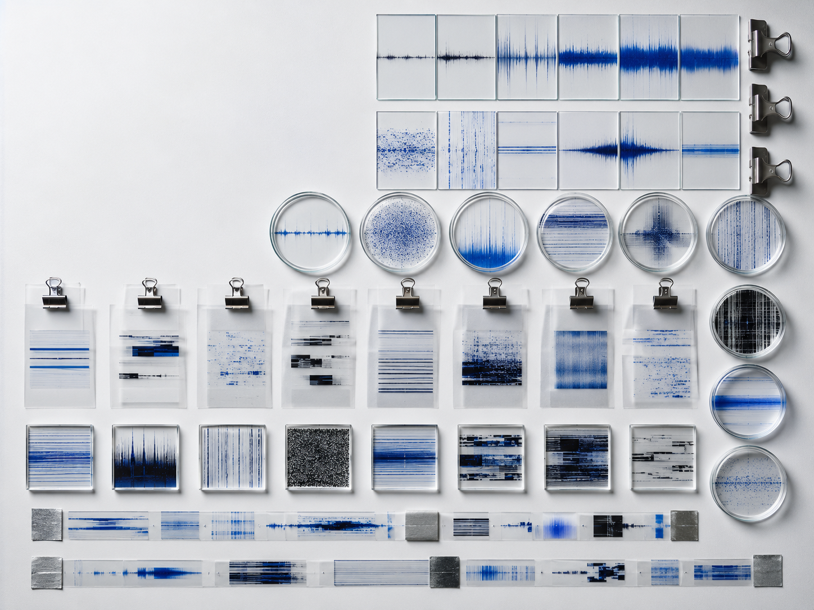
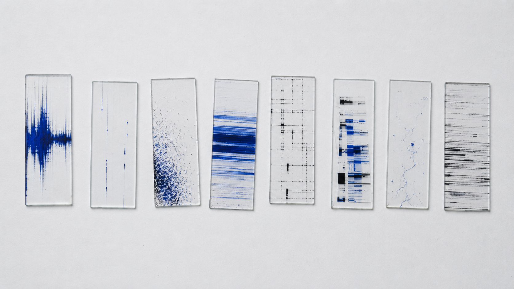
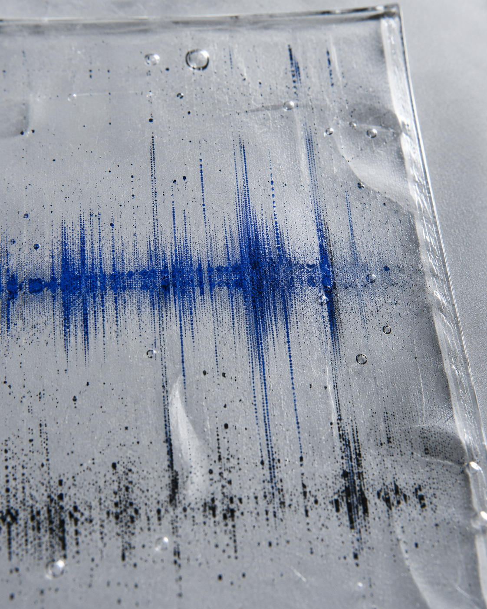
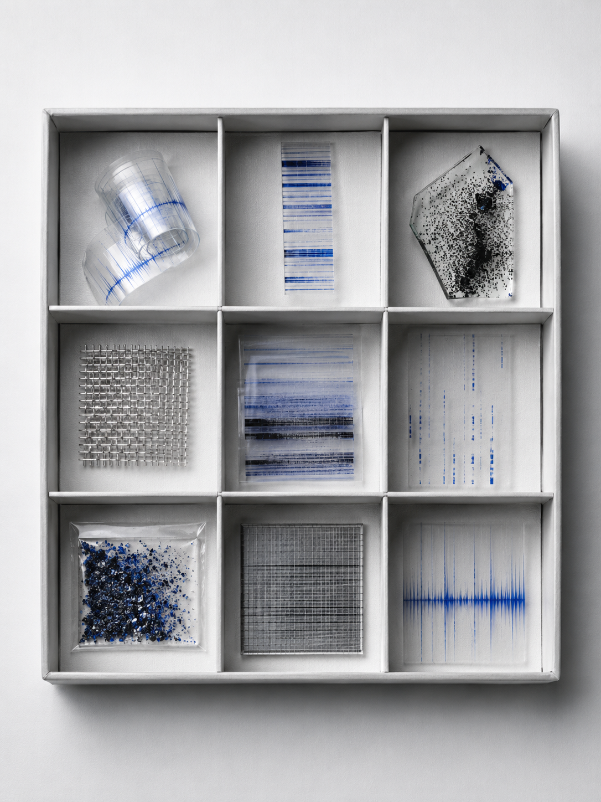
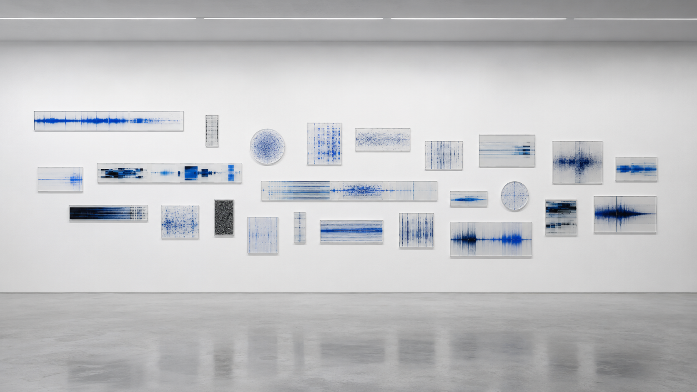

视觉方法 / PROCESS
从原始采样、波形切片到编码归档，逐步测试分类规则与版面层级的稳定性。
A08 · SYSTEM
信号标本
将不可见信号采集为可编号、切片与保存的视觉标本系统。

本项目将波形、噪声、条码、频谱与干扰信号视为可采集、切片、编号和保存的视觉标本。通过截取不同信号片段，建立采样坐标、强度等级、频率区间与保存状态等记录规则，并将其整理为连续图版、索引卡和分类页面。视觉结果介于技术档案与自然史图谱之间，试图讨论不可见的信息如何在被测量、命名和归档之后，获得类似实体材料的秩序与可信度。
从原始采样、波形切片到编码归档，逐步测试分类规则与版面层级的稳定性。
先把信号当作图像观察，切片之后，相似的波形会因为尺度、密度和断裂方式呈现出明显差异。在编号和分组时不断调整规则，尽量让系统看似严密，却仍保留噪声本身的不稳定性。



